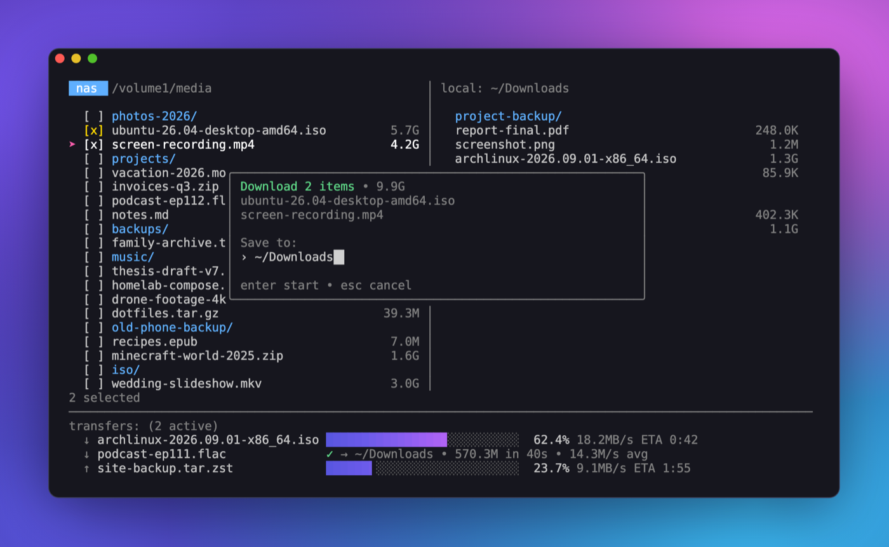

rtr
A TUI for remote file browsing and rsync transfers

Browse remote hosts over SFTP and download or upload files with rsync. The
rsync command and its flags are configurable. Transfers run in the background,
so you can keep browsing while they finish.